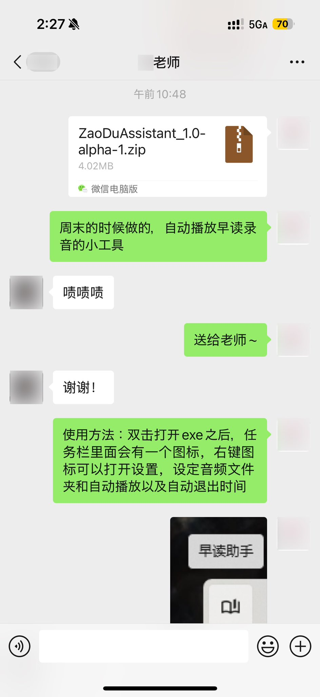
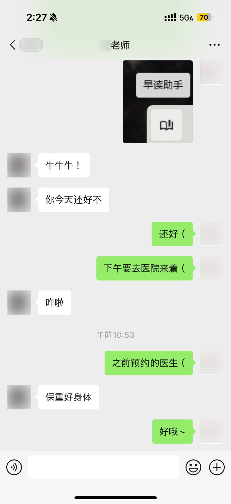

たたなこ🏳️⚧️🍥
@tatanakots
@MengXi969 ttnk用ChatGPT一小时完成的东西
让ttnk的班主任和ttnk都很开心~


たたなこ🏳️⚧️🍥
@tatanakots
ttnk又开始vibe怪东西了
送给班主任后被班主任关心了
ttnk开心~ https://t.co/32LEculvKr
梦溪MengXi
@MengXi969
如果要我评价那位14岁用Qoder一小时做出项目的学生
我只能说像他这样的天才少年在某个a开头活动中一抓一大把（包含开发设计等方面）
我没有说年轻化的趋势有什么不好（虽然也好不到哪去），只是想说做人不能太自大
你做项目起码要人看到你的技术在哪里